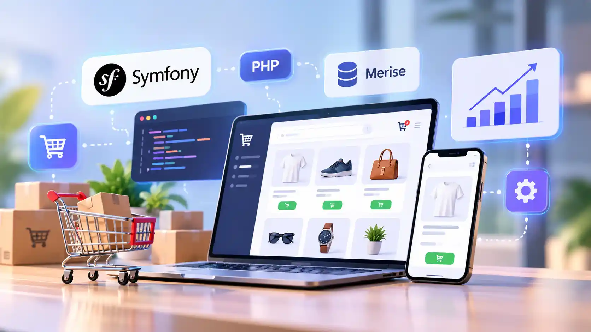

Développement de sites et applications web
Création de sites professionnels, plateformes web et applications adaptées aux besoins de votre activité.
Portfolio
Développeur Full Stack & Coordinateur de projet web
Je conçois et fais évoluer des solutions web sur mesure pour aider les entreprises à structurer leur présence en ligne, automatiser certaines tâches et faire progresser leurs outils métier.
01 / Services
Création de sites professionnels, plateformes web et applications adaptées aux besoins de votre activité.
Développement de sites WordPress, fonctionnalités sur mesure, maintenance et amélioration de sites existants.
Connexion d’applications et automatisation des tâches pour simplifier les processus de travail.
Organisation, suivi et coordination des différentes étapes d’un projet, de sa conception à sa mise en ligne.
Vérification des fonctionnalités, identification des anomalies et suivi des corrections pour améliorer la fiabilité des applications.
02 / MES RÉALISATIONS
Découvrez les plateformes, sites et fonctionnalités web auxquels j’ai contribué, de leur développement à leur amélioration.
Développement et personnalisation d’une plateforme professionnelle intégrant des fonctionnalités adaptées aux besoins des entreprises et de leurs utilisateurs.
Interventions : Développement web, personnalisation WordPress et intégration de fonctionnalités.
Amélioration et évolution d’une plateforme existante pour répondre à de nouveaux besoins fonctionnels et faciliter son utilisation.
Interventions : Développement de fonctionnalités, intégration et maintenance évolutive.
Développement et amélioration d’un site professionnel destiné à présenter les activités, les services et les informations d’une organisation.
Interventions : Intégration web, personnalisation et amélioration des fonctionnalités.
Création et évolution de sites WordPress avec des fonctionnalités personnalisées pour répondre aux besoins spécifiques de chaque projet.
Interventions : Développement WordPress, widgets Elementor et maintenance.
03 / Projets complémentaires
Application web d'analyse de panier de marché pour identifier des associations et produire des recommandations exploitables.

Conception d'un parcours e-commerce avec gestion des produits, commandes, utilisateurs et modélisation Merise.
Système d'information pour organiser les stocks, les ventes et les données clients d'une pharmacie.
04 / EXPÉRIENCES
Mon parcours combine développement web, amélioration de solutions existantes et coordination des projets.
Développement, personnalisation et maintenance de solutions web, avec une participation à la coordination et au suivi des projets.
Réalisations : plateformes B2B, fonctionnalités WordPress sur mesure, widgets Elementor, automatisation de processus, résumés audio et évolution de sites existants.
Développement d'une application web d'analyse de panier de marché avec data mining et recommandations exploitables pour l'aide à la décision.
Université de Toamasina.
Parcours informatique et mathématiques appliquées.
05 / Compétences
Construire des interfaces, applications et plateformes web adaptées à un besoin précis.
Faire évoluer WordPress avec des thèmes, plugins, modules et intégrations personnalisés.
Relier les besoins métier, les données et les outils techniques pour produire des solutions utiles.
06 / CV
Le CV public complète le portfolio avec un format plus détaillé pour les recruteurs et partenaires.
07 / Contact
Pour une création de site, une amélioration WordPress, une plateforme métier ou une collaboration, contactez-moi directement.